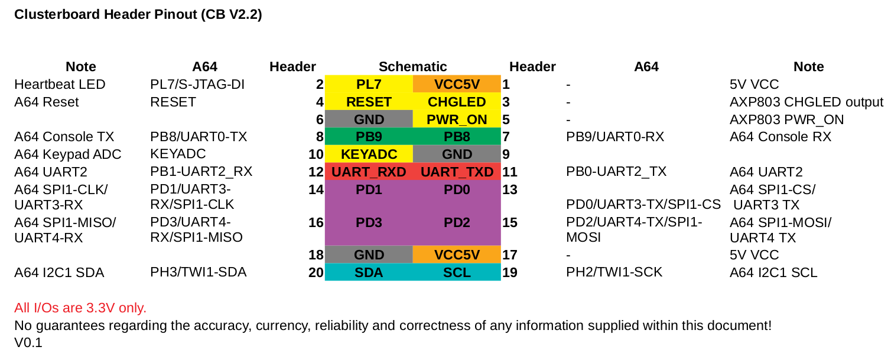

Pinouts
¶
From the pine64 clusterboard forum.

notes
Navigation
arm
BeagleBone Black
Pine64 Clusterboard
Espressobin
Pine64 A64+
databases
DNS stuff
elastic stuff
kubernetes
OpenSSH
Operating Systems
OSSEC
rsyslogd
SecurityOnion
ssl
Stupid Unix Tricks
Tools
Vendor Stuff
misc
Related Topics
Documentation overview
arm
Pine64 Clusterboard
Previous:
OpenBSD
Next:
Temperature
Quick search